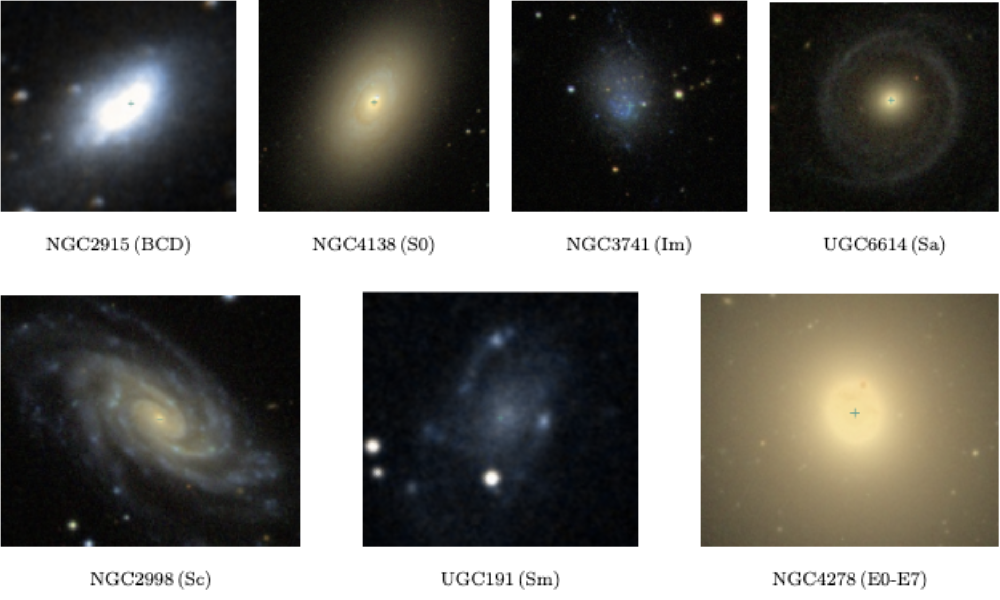

Our Work
Dark Matter has been puzzling scientists and the world for quite a bit of time. Its origin can be traced back to the observations of astronomer Fritz Zwicky in the 1930s, who noticed inconsistencies between the calculated and observed mass of galaxy clusters, hypothesizing the existence of invisible matter, which he referred to as Dark Matter.
However, it was not until the 1970s that the concept of dark matter gained significant attention. Vera Rubin, an astronomer, and her colleagues conducted studies on the rotation curves of galaxies. Their observations revealed that stars located at the outer regions of galaxies exhibited velocities higher than expected based solely on visible matter. This behavior suggested the presence of additional mass, dark matter.
Dark matter holds a crucial role in our comprehension of the cosmos, accounting for roughly 27 percent of the universe’s total mass. Its gravitational influence also plays a fundamental part in shaping the formation of galaxies, providing the essential framework that governs the construction of large-scale structures.
Our study aims to find the distribution of dark matter in a galaxy based on the radius, and then compare the distributions for spiral, elliptical, lenticular, and irregular galaxies. We also want to compare the dark matter distributions in field galaxies to those in a cluster.
Investigating the distribution of dark matter within galaxies is crucial for understanding the structure of the universe, the formation of galaxies, and the nature of dark matter. While scientists lack a full understanding of dark matter, there is strong evidence supporting its existence. Because of this, further investigation of dark matter, including its distribution, is warranted. Understanding the distribution of dark matter would also provide understanding of astrophysical processes, such as galaxy formation and evolution, and allow testing of theoretical models, including cosmological models. It would also offer a stronger grasp on the formation of galactic halos and gravitational lensing within galaxies.
Our Source of Data
We use the Spitzer Photometry & Accurate Rotation Curves (SPARC) database of galaxies. We specifically focus on the Basic SPARC Data (Late-Type Galaxies) and the Early-Type Galaxies Data for our analysis. Our sample encompasses various galaxy types, including Blue Compact Dwarf (BCD), Lenticular (S0), Small Magellanic (Im), Tight Spirals (Sa), Loose Spirals (Sc), Irregular Spirals (Sm), and Elliptical (E0-E7). By including galaxies across different classifications, the goal was to capture a wide range of dark matter distribution patterns.

Our Results
The luminosity curves for all galaxies flatten at larger radii, indicating a decrease in stellar density and a growth in luminosity. Also, M/L ratio starts low and increases as the radius increases. This suggests the presence of dark matter increasing in addition to the visible matter. In addition, we can tell that the distribution of dark matter from the center of the galaxy rises at an exponential rate.
Mass (Solar Masses) vs. Radius (Kiloparsecs)
Luminosity (Solar Luminosities) vs. Radius (Kiloparsecs)
Mass-to-Luminosity Ratio (Solar Masses per Solar Luminosity) vs. Radius (Kiloparsecs)
Reflection
Reflecting on our research, we have made significant progress in understanding the distribution of dark matter in galaxies and its relationship with mass and luminosity. Through the analysis of data from the SPARC database, we were able to examine the mass-to-luminosity ratio within different radii and observe intriguing trends.
One of the notable findings was the increase in the mass-to-luminosity ratio with radius for all galaxy types. This suggests that as we move further away from the center of a galaxy, the influence of dark matter becomes more prominent relative to the visible matter. This aligns with the concept of dark matter forming a halo around galaxies and exerting gravitational effects on the luminous matter.
Future Work
Moving forward, further investigation is required to delve deeper into the complexities of dark matter distribution and its implications for galaxy formation and evolution. Additionally, exploring the connection between dark matter distributions in field galaxies and those in clusters would provide valuable insights into the influence of the environment on dark matter structures.
Examining the detailed profiles of dark matter halos is also an intriguing area for research. While our research focused on the distribution of dark matter within specific radii, further exploration of density profiles and inner slopes of dark matter halos can provide insights into the properties of dark matter.

View Our Source Code on GitHub